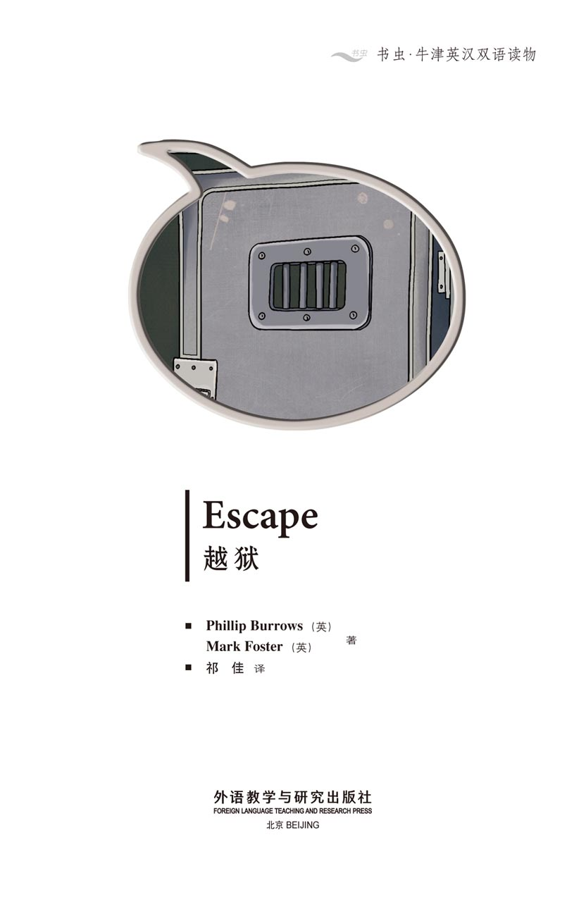
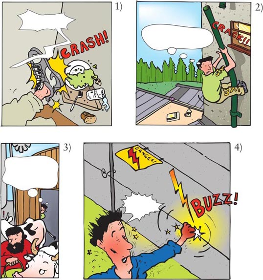
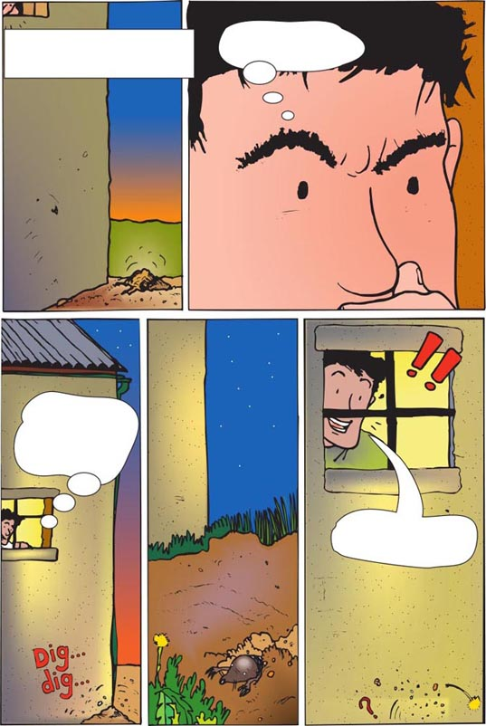
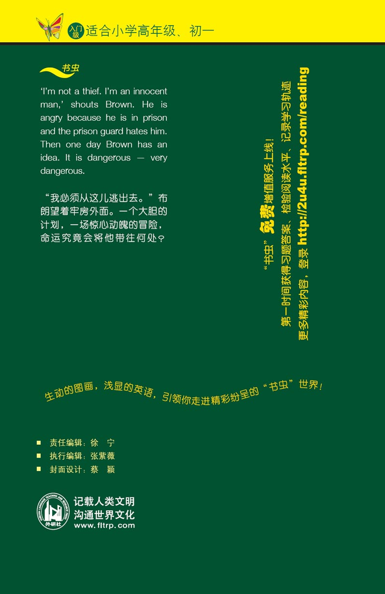

扉页

版权页
京权图字：01-2013-7798
Published by arrangement with Oxford University Press for sale in the People's Republic of China only and not for export therefrom. This edition is for sale in the mainland of China only, excluding Hong Kong SAR, Macao SAR and Taiwan.
© Oxford University Press 2008
Oxford is a registered trademark of Oxford University Press
图书在版编目（CIP）数据
越狱：英汉对照／（英）伯罗斯（Burrows, P.），（英）福斯特（Foster, M.）著．祁佳译．—北京：外语教学与研究出版社，2013.11
（书虫·牛津英汉双语读物）
书名原文：Escape
ISBN 978-7-5135-3761-2
Ⅰ．①越… Ⅱ．①伯… ②福… ③祁… Ⅲ．①英语—汉语—对照读物②短篇小说—英国—现代 Ⅳ．①H319.4：I
中国版本图书馆CIP数据核字（2013）第271147号
出版人 蔡剑峰
责任编辑 徐 宁
执行编辑 张紫薇
封面设计 蔡 颖
出版发行 外语教学与研究出版社
社 址 北京市西三环北路19号（100089）
网 址 http://www.fltrp.com
版 次 2013年12月第1版
书 号 ISBN 978-7-5135-3761-2
制售盗版必究 举报查实奖励
版权保护举报电话：（010）88817519
内容简介
内容简介
“天气真好。哦，我忘了——你出不去。哈哈哈！”监狱看守说。布朗正在坐牢——坐五年牢！他能做的只有看书。监狱看守讨厌他，给他糟糕的食物。“这不是生活。我必须从这儿逃出去。”他想。
后来有一天，他从那扇很小的窗户往外看，看到了一只鸟。“那只鸟是自由的。”他想。突然，他有了一个主意：“我可以像那只鸟一样……”
布朗有了什么主意？他怎么才能像鸟一样？他能逃出监狱吗？
ESCAPE
ESCAPE
'It's a very beautiful day. Oh, I forget – you can't go out. Ha, ha, ha!' says the prison guard. Brown is in prison – for five years! All he can do is read. The prison guard hates him and gives him bad food. 'This is no life. I must get out of here,' he thinks.
Then one day, he looks out of his very small window and he sees a bird. 'That bird is free,' he thinks. Suddenly he has an idea: 'I can be like that bird,' he thinks...
What is Brown's idea? How can he be like a bird? Can he escape from prison?
目录
Escape

GLOSSARY 词汇表
GLOSSARY
词汇表
believe v. think someone is telling the truth 相信
electric adj. an electric fence works by using electricity 带电的
escape v. run away from prison （从监狱等）逃走，逃离
free adj. not in prison 自由的，无拘束的
hate v. strongly dislike 憎恨，仇恨
hide v. go to a place where no one can see you 躲藏，藏身
hurt v. a broken leg hurts 感到疼痛
idea n. a clever thought 想法，主意
innocent adj. doing no wrong 无罪的，清白的
lie v. you lie on your back when you sleep 躺，平卧
ouch interj. a noise you make when you hurt yourself 哎哟（突然感到疼痛时的叫声）
safe adj. you are safe when no one can hurt you 安全的
shush n. a noise you say to make someone quiet 嘘声（让别人安静所发出的声音）
snore n. a noise some people make when they sleep 鼾声
v. when someone who is sleeping snores, they make a noise through their nose and mouth 打鼾，打呼噜
stomach n. the part of your body where food goes 胃，腹部
thief n. someone who takes something that is not theirs 小偷，贼
turn v. move something 使转向；对准
way n. a direction or path 方向；道路
ACTIVITIES 阅读练习
Escape
ACTIVITIES
阅读练习
ACTIVITIES
Before Reading
1 Look at the front and back covers of the book and answer these questions.
1) Who is Brown?
a □ A cross-country runner.
b □ A prisoner.
c □ A farmer.
2) What do you think happens to Brown?
a □ Someone catches Brown.
b □ Brown escapes.
c □ Someone shoots Brown.
3) Do you think Brown is
a □ ... a thief?
b □ ... a murderer?
c □ ... an innocent man?
2 Read the story introduction on the front of the book and answer these questions.
1) Does the prison guard like Brown?
2) Brown has an idea. What is it, do you think?
ACTIVITIES
While Reading
1 Match the words with the pictures.

a □ 'Good, I'm safe. The farmer's going away.'
b □ 'Be careful, Brown. Don't fall now.'
c □ 'Ow!'
d □ 'I'm not hungry!'
2 Are the following true (T) or false (F)?
1) Brown must stay in prison for ten years.
T □／F □
2) Someone sees Brown escape.
T □／F □
3) The guard brings Brown his dinner.
T □／F □
4) Brown sees a dog out of the window.
T □／F □
5) The guard hides from Brown.
T □／F □
6) Brown hides in a ditch.
T □／F □
3 Answer the following questions.
Who
1) ... hides in the river?
2) ... is sitting by the side of the road?
3) ... says: 'He does snore!'?
4) ... wants her clothes back?
5) ... wants three big pizzas?
6) ... says: 'Nobody escapes from me'?
7) ... is digging a tunnel?
Why
8) ... does Brown stop cycling?
9) ... does Brown change his clothes?
10) ... can't Brown climb the fence?
11) ... is Brown's box not on the plane?
What
12) ... does Brown take from the camper?
13) ... does Brown say to the chickens?
14) ... does the woman pilot want to eat?
15) ... does Brown do when he is back in his cell?
ACTIVITIES
After Reading
1 Use these words to join the sentences together.
but and when so
1) Brown is in prison. He says he is innocent.
2) Brown jumps in the ditch. The guards shine the light.
3) The dogs chase Brown. He hides in the water.
4) One pilot wants one pizza. The other pilot wants three.
5) Brown cannot escape by plane. He has another idea.
2 Write a short letter to a friend. Tell them what the story is about. Include these words in your letter:
escape prison guard farmer plane box light fence catch fly dogs book
_______________________________________________________________________________________________________________________________________________________________________
3 Write a different ending by filling in the box and bubbles.

TRANSLATION 参考译文
TRANSLATION 参考译文
Escape
越狱
I'm innocent! Why don't they believe me?
Five years! I must stay in this prison for five years! All I do is read. This is no life. I must get out of here.
我是无辜的！他们为什么不相信我？
五年！我得在这座监狱里呆五年！我能做的只有看书。这不是生活。我必须从这儿逃出去。
Suddenly the door opens.
Ah, Brown. How are you today? You like your book, I see.
It's a very beautiful day. Oh, I forget – you can't go out. Ha, ha, ha!
Why do you hate me? You don't know me. Why do you say these things?
突然，门开了。
啊，布朗。你今天怎么样？看来你喜欢你的书。
今天天气真好啊。哦，我忘了——
你出不去。哈哈哈！
你为什么讨厌我？你都不认识我，为什么说这些话？
You're a thief. Everybody hates thieves.
I'm not a thief. I'm an innocent man.
You're not innocent. Why are you in prison? Can you answer that? Now, eat and be quiet.
I'm not hungry!
你是个贼。大家都讨厌贼。
我不是贼。我是无辜的。
你才不无辜呢。你为什么会进监狱？你能回答吗？现在给我吃饭，闭嘴。
我不饿！
Now, don't get angry, Brown.
The guard's right – it is a beautiful day. I must escape. But how?
I want to be like that bird. He's free. He does what he likes.
好了，别生气，布朗。
看守说得对——确实是好天气。我必须逃出去。可怎么做呢？
我想像那只鸟一样。它是自由的，它可以做它想做的事。
Wait a minute. I've got an idea. I can be like that bird.
There's a photograph. It's in one of these books, and it shows the country near the prison. Where is it?
Yes! It's here. Here's the prison. And over here...
OK. Tomorrow I'm leaving.
等等，我有主意了。我可以像那只鸟一样。
有张照片，在某本书里，照片上是监狱附近的乡村。它在哪儿呢？
对！就在这儿。这儿是监狱，那儿是……
好。明天我就离开。
The next day.
Good morning, Brown. It's another beautiful day. But you're in here. Ha, ha, ha!
The guard does not believe his eyes.
No! It can't be! Quick – sound the alarm. It's Brown...
... he's not here!
第二天。
早上好，布朗。今天的天气也很好，可你却在这儿。哈哈哈！
看守不敢相信自己的眼睛。
不！不可能！快——拉警报。是布朗……
……他不见了！
Look everywhere. You must catch Brown. Find him and bring him to me. Do you hear?
Yes, sir. Right away, sir.
This is Brown's cell. I want someone in it tonight. You or Brown. Do you understand?
Yes, sir.
He's not happy and I'm in trouble.
I'm not happy and he's in trouble.
把每个地方都搜一遍。你必须抓住布朗。把他找出来，带到我这儿。听到了吗？
是的，长官。马上去办，长官。
这是布朗的牢房。我要这里今晚有人，要么是你，要么是布朗。明白吗？
明白，长官。
他不高兴了，我有麻烦了。
我不高兴了，他有麻烦了。
But Brown is not free.
The guard never looks up here.
Now I must get out of here.
After him!
I must be quick. I'm not going back to prison. They must kill me first.
但是布朗仍在牢房中。
看守自始至终没有抬头看这儿。
现在我必须逃出去。
追！
我必须快点。我可不想再回监狱了。他们肯定会先杀了我。
Be careful, Brown. Don't fall now.
I'm nearly there. But this isn't easy.
Don't be afraid, Brown... OK, here I go.
Brown is high above the guards. He runs and jumps.
We must stop him.
Where is he?
Can you see him?
Look everywhere and find him –fast.
小心，布朗。可别现在掉下去。
我差不多到了。不过这可不容易啊。
别怕，布朗……好，我跳了。
布朗在看守们的头顶上方奔跑、跳跃。
我们必须截住他。
他在哪儿？
你能看到他吗？
所有地方都要搜，找到他——要快。
Oh, it's a long way down.
Help!
Ouch! That hurts.
There's a ditch. I can get there.
What's that? Is it him? Turn your light that way.
啊，好高啊。
救命啊！
哎哟！好疼。
那儿有道沟。我可以到那儿去。
那是什么？是他吗？把灯打向那边。
Can they see me? Am I safe?
The guards do not see Brown. He is safe – for now.
Perhaps it's an animal. I don't think it's Brown.
My foot hurts. I've got water in my shoes. I'm tired. But I'm not going back to prison.
The wood isn't far. It's safe there. They can't catch me now.
他们能看到我吗？我安全吗？
看守没有看到布朗。他安全了——目前是这样。
那或许是个动物吧，我觉得不是布朗。
我的脚很疼，鞋子进水了，我好累，可我不要回监狱。
树林离这儿不远了，那儿安全。他们现在抓不到我了。
Brown runs and runs until...
... he can't run anymore.
Suddenly...
Dogs. I can hear dogs.
Go on!
Where's Brown?
Get him!
Oh, no. The dogs are looking for me!
布朗跑啊跑啊，直到……
……他再也跑不动了。
突然……
狗。我听到狗叫了。
接着搜！
布朗在哪儿？
抓住他！
啊，不好。那些狗在找我！
How can I hide? Perhaps...
A minute later.
Where is he? The dogs don't know. Perhaps he's this way. Come with me.
Brown is very tired.
I want to sleep, but I can't now. I must go on.
我怎么躲起来呢？或许……
一分钟后。
他在哪儿？狗也不知道。或许他往这边跑了。跟我来。
布朗疲惫不堪。
我想睡觉，但现在还不行。我必须继续逃。
It's getting dark. I can stop soon.
Ah, this is nice.
I need that bicycle. I am not a thief but...
Stop! That's my bicycle.
Sorry. I need it. Bye!
Brown cycles for hours.
天越来越黑了。我很快就可以停下来了。
啊，真好。
我需要那辆自行车。我不是贼，可是……
站住！那是我的自行车。
对不起，我需要它。再见！
布朗骑了几个小时。
Watch out! You...!
The bicycle doesn't work now. I must stop. Where can I find somewhere to sleep?
Shush. I'm not going to hurt you. I only need to sleep. Can I sleep here, please? I don't snore.
Brown shuts his eyes – and sleeps.
He does snore!
小心！你……！
这辆自行车现在不能用了。我必须停下来。我到哪儿找个地方睡觉呢？
嘘，我不会伤害你们，我只想睡一觉。请问我能睡在这儿吗？我不打呼噜的。
布朗闭上眼睛——睡着了。
他打呼噜！
There is a noise. Brown opens his eyes.
What's that?
Come on then, Daisy. On your feet, Clover.
Good, I'm safe. The farmer's going away.
These are prison clothes. I need some different clothes.
一阵响声传来，布朗睁开了眼睛。
那是什么声音？
过来，黛西。起来，克洛弗。
好，我安全了。那个农夫走了。
这些是囚衣，我需要些别的衣服。
Hey! What are you doing? Those aren't your clothes!
Come back here. Thief! Stop!
Get out of my way.
Guards, dogs, and now farmers' wives. What next?
嘿！你在干什么？那些不是你的衣服！
回来。小偷！站住！
别挡道。
看守、警犬，现在是农夫们的妻子。还会发生什么？
I hear something. Yes! I'm very close now.
That plane's coming in to land. The airport's over there.
Brown arrives at the airport.
The fence is high, but I can climb it.
我听到了什么声音。是的！现在离我很近了。
那架飞机要着陆。机场就在那边。
布朗来到机场。
围栏很高，不过我能爬上去。
Ow!
An electric fence. I can't climb it. What do I do now?
I can climb this tree and get over that fence. But I must be careful.
Ten more minutes and I'm free. All I need is a big plane.
There are a lot of planes. Which one do I want?
哎哟！
这是电网，我没法爬了。现在我该怎么办？
我可以爬上这棵树，然后翻过围栏。但我必须小心。
再过十分钟我就自由了。我只需要一架大飞机。
那儿有很多飞机，我上哪一架好呢？
That's the one. There's lots of room for me.
I need to eat. Pizza, I think! And some milk. Are you hungry?
Of course I am. I need three big pizzas. It's five hours before we land again, you know.
Quick, we've only got half an hour. What's that noise?
My stomach, I think. I'm very hungry.
就是那架。那架飞机上会有很多地方让我藏身。
我得吃点东西。我觉得来点比萨饼吧！再来些牛奶。你饿吗？
当然饿了。我要三个大比萨饼。要知道，我们还要再飞五个小时才能再次着陆。
快，我们只有半小时的时间。
什么声音？
我想是我的肚子在叫吧。我太饿了。
I can get in here.
What a lot of boxes! They can't all go in that plane.
I'm free. I'm like that bird now.
Wait!
He's in there!
我可以藏在这里面。
好多箱子啊！那架飞机也装不下。
我自由了。现在我像那只鸟一样了。
等等！
他在那里面！
Some time later.
Another beautiful day, Brown. But not for you. Ha, ha, ha!
You can't escape, Brown. Nobody escapes from me.
Brown lies on the cold floor. He is hurt.
The guard's wrong. I must escape. I can't stay in here.
一段时间后。
又是天气好的一天，布朗。但你享受不到，哈哈哈！
你逃不掉的，布朗。没人能从我手里逃走。
布朗躺在冰冷的地板上，他受了点伤。
看守错了。我必须逃出去，我不能呆在这儿。
You can't keep me in here. I'm innocent. You wait and see...
Perhaps things aren't all bad. I'm alive. The sun shines. I hear the birds sing. I have my books. Other people have a worse life than I have...
Brown looks out of his window for a long time.
你不能把我关在这儿。我是无辜的。你等着瞧……
或许事情并不那么糟。我还活着，阳光明媚。我听到鸟儿歌唱，我有书看。其他人过得还不如我……
布朗久久地望着窗外。
Brown sees something move. It is a mole.
Wait a minute!
That mole's making a tunnel.
I've got an idea.
布朗看到有东西在动。那是只鼹鼠。
等一下！
那只鼹鼠在挖地道。
我有主意了。
封底
